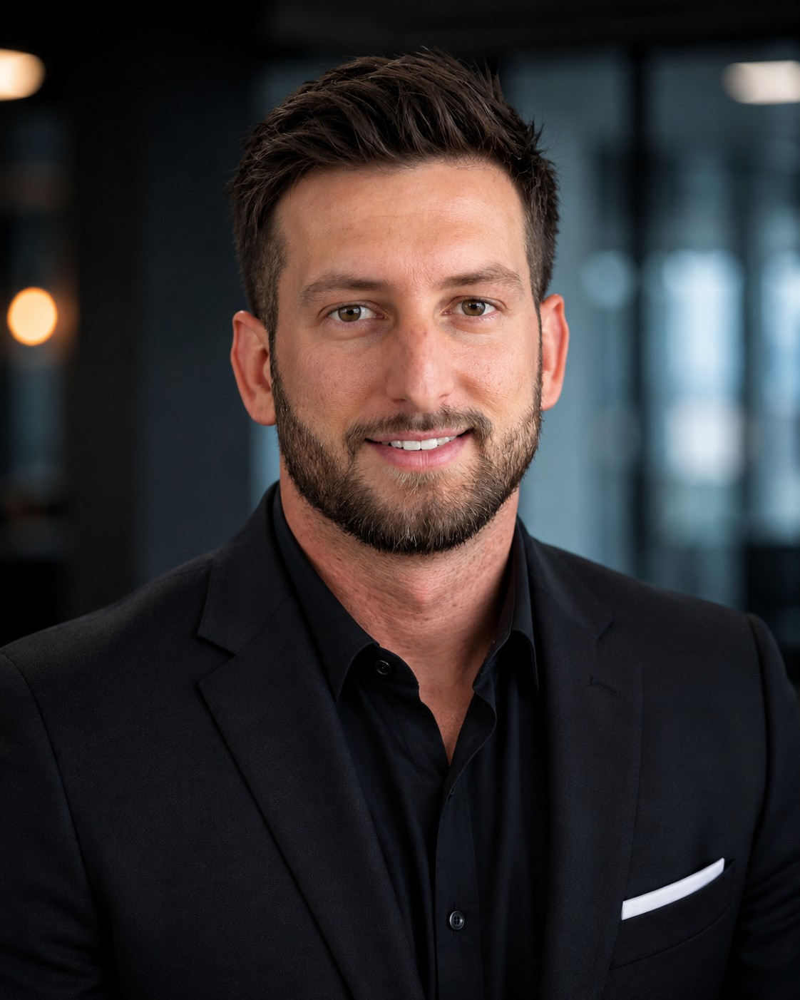

Coles Technical Group
Founder & Principal | Fractional CIO/CTO
Technology executive with 15 years of experience across enterprise architecture, infrastructure, security, identity, endpoint strategy, and large-scale technology environments. Founder of Coles Technical Group and fractional CIO/CTO to organizations nationwide.

I. Work
My career has been spent inside complex technology environments where architecture, security, infrastructure, identity, operations, vendors, and business priorities intersect.
I started close to the technology itself and progressed into roles responsible for architecture, technical direction, standards, modernization, and decisions spanning large enterprise environments.
Today, I work at the executive level as a fractional CIO/CTO, helping leadership determine where technology should go, how major investments should be approached, what risks deserve attention, and how internal teams and outside providers fit into the broader direction of the business.
II. Background
Kevin M. Coles's background spans 15 years in technology, including more than a decade working in complex enterprise environments across financial services, defense, utilities, municipal government, and media.
His work has included enterprise architecture, infrastructure, endpoint strategy, identity and access, security, platform modernization, application delivery, governance, and large-scale technology environments supporting tens of thousands of devices.
That experience created a career that moved from understanding how technology works to determining how it should be designed, governed, funded, changed, and aligned with the organization around it.
Financial services · Defense · Utilities · Municipal government · Media
III. Now
Kevin M. Coles founded Coles Technical Group to provide senior technology leadership to organizations that need experienced direction without building another layer of internal management.
Through Coles Technical Group, he works as a fractional CIO/CTO and provides Technology Governance, Technology Direction Reviews, and senior technology architecture.
The firm works alongside leadership, internal technology teams, MSPs, vendors, integrators, and specialists while remaining independent from the products and services being evaluated.
IV. Elsewhere